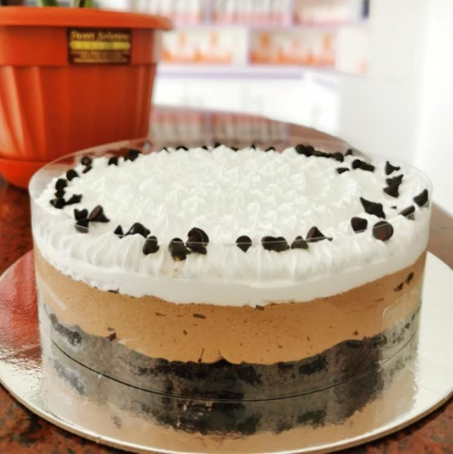

A moist chocolate cake is one which has a texture that resembles that of a brownie. It can be described as sweet, rich, and velvety in texture. The cake's flavor is that of chocolate and the intended result is for it to be gooey with a pleasantly gooey consistency.
Sansrival
₱700
The cake is made by alternating layers of almond paste and meringue. The result is a light and airy cake that is perfect for celebrations and special occasions.
Red Velvet
₱890
Red velvet cake is a rich, velvety chocolate cake with a distinctive red color and subtle hints of cocoa powder and spices. It’s usually topped off with cream cheese frosting, which gives the cake a smooth, satiny sheen and an intense, almost-bitter chocolate flavor.
Cappucino
₱700
A cappuccino cake is a sponge cake flavoured with chocolate and coffee and served with a light chocolate frosting. It is often decorated with cocoa powder, chocolate curls, and chocolate shavings.
Full Menu
Carrot Cake
₱750
A carrot cake is a cake made of carrots, flour, sugar, oil, eggs, and sometimes baking powder, baking soda, and spices. The most common carrot cake flavor is vanilla, but carrot cake can also be flavored with spices such as cinnamon, ginger, and nutmeg. Carrot cake can be eaten as is, or it can be frosted and decorated. Carrot cake is often decorated with cream-based frostings, such as cream cheese frosting, or cream cheese icing.
Sansrival
₱700
The cake is made by alternating layers of almond paste and meringue. The result is a light and airy cake that is perfect for celebrations and special occasions.
Cappucino
₱700
A cappuccino cake is a sponge cake flavoured with chocolate and coffee and served with a light chocolate frosting. It is often decorated with cocoa powder, chocolate curls, and chocolate shavings.
Choco Mousse
₱720
A chocolate mousse cake is a dessert with a light and airy texture that is often served with whipped cream or ice cream. The base of the cake is chocolate mousse, which is made by beating chilled, thickened cream until it forms stiff peaks. The chocolate mousse is spread over the base of the cake and baked until the cake is golden brown. It is then topped with chocolate shavings.
Mango Chiffon
₱720
Mango Chiffon Cake is a light, airy, and moist cake made with mangoes. The delicate flavor of mangoes is balanced by the sweetness of the cake. It is often served as dessert or as a snack.
Chocolate Sansrival
₱750
A Chocolate Sansrival Cake is a rich, dense, and fudgy dessert made with chocolate and egg yolks. The cake is often served as dessert or as a snack.
Moist Chocolate Cake
₱750
A moist chocolate cake is one which has a texture that resembles that of a brownie. It can be described as sweet, rich, and velvety in texture. The cake's flavor is that of chocolate and the intended result is for it to be gooey with a pleasantly gooey consistency.
Moist Chocobutternut
₱750
This moist, chocolate cake is filled with a sweet, caramelised butternut filling and topped with a rich chocolate ganache.
Cookies and Cream
₱815
A Cookies and Cream Cake is a chocolate cake filled with cookie dough and frosted with a chocolate frosting. The most popular flavor of dessert is Cookies and Cream, but there are dozens of other flavor choices, including Oreo, Birthday Cake and Mint Chocolate.
Black Forest
₱815
A black forest cake is a cake made from chocolate, cherries and swiss chocolate. It is dark chocolatey, sweet and has a firm chocolatey outside and a gooey chocolatey centre.
Ube Halaya
₱815
Ube Halaya, also known as purple yam cakes, are a popular traditional Filipino dessert. They're a rich, moist cake made with ground purple yam and other spices.

Tiramisu
₱800
The classic Italian dessert is made by layered meringue, coffee and cocoa powder, cake and a sweetened cream, usually topped with cocoa powder and a dusting of cocoa nibs. The dessert is meant to be served cold, often after being refrigerated.
Ube Macapuno
₱850
Ube, or purple yam, is a popular Filipino dessert. Ube Macapuno is a moist purple cake flavored with ube, or purple yam.
Oreo Cheesecake
₱850
Oreo Cheesecake is made with cream cheese, Oreos, and sweetened condensed milk. It is usually topped with additional Oreos and a chocolate ganache.
Blueberry Cheesecake
₱850
Blueberry cheesecake is a dessert made from blueberry sauce and cheesecake batter. The sauce is thickened and flavored with blueberry juice and granulated sugar, and sometimes yogurt. The cheesecake batter is poured over the blueberry sauce and baked. The cheesecake is then topped with blueberries and sometimes whipped cream.
Strawberry Cheesecake
₱850
Strawberry cheesecake is made with crumbled graham crackers, cream cheese, and sweetened condensed milk. The mixture is then topped with chopped strawberries before being baked. The resulting dessert is both chewy and creamy, with a strawberry flavour that's the star of the show.
Mango Cheesecake
₱850
Mango cheesecake is a sweet dessert made with the base similar to a cheesecake, but it is topped with fresh mangoes and sometimes a mango sorbet. The cheesecake is smooth and creamy, and it has a unique flavour that is a combination of the mangoes and cheesecake.
Red Velvet
₱890
Red velvet cake is a rich, velvety chocolate cake with a distinctive red color and subtle hints of cocoa powder and spices. It’s usually topped off with cream cheese frosting, which gives the cake a smooth, satiny sheen and an intense, almost-bitter chocolate flavor.